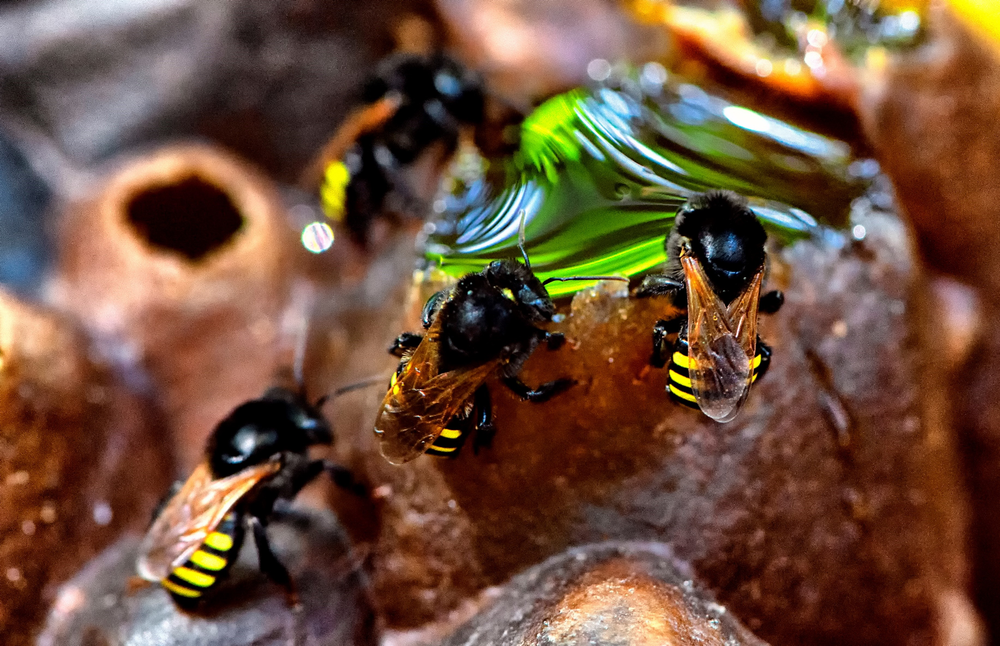
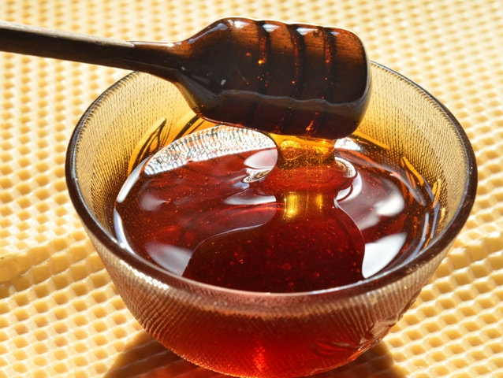

História do mel das Abelhas sem ferrão
O mel das abelhas sem ferrão tem uma história rica, especialmente nas culturas indígenas da América Latina, onde é valorizado há milhares de anos por suas propriedades medicinais e seu uso em rituais. A prática de meliponicultura, que é a criação dessas abelhas, é sustentável e contribui para a polinização de plantas.

Nos últimos anos, o mel dessas abelhas ganhou reconhecimento como um produto gourmet, destacando-se por seu sabor único. No entanto, essas abelhas enfrentam desafios como a perda de habitat e o uso de pesticidas, tornando a conservação delas essencial para a biodiversidade e a produção de mel.
